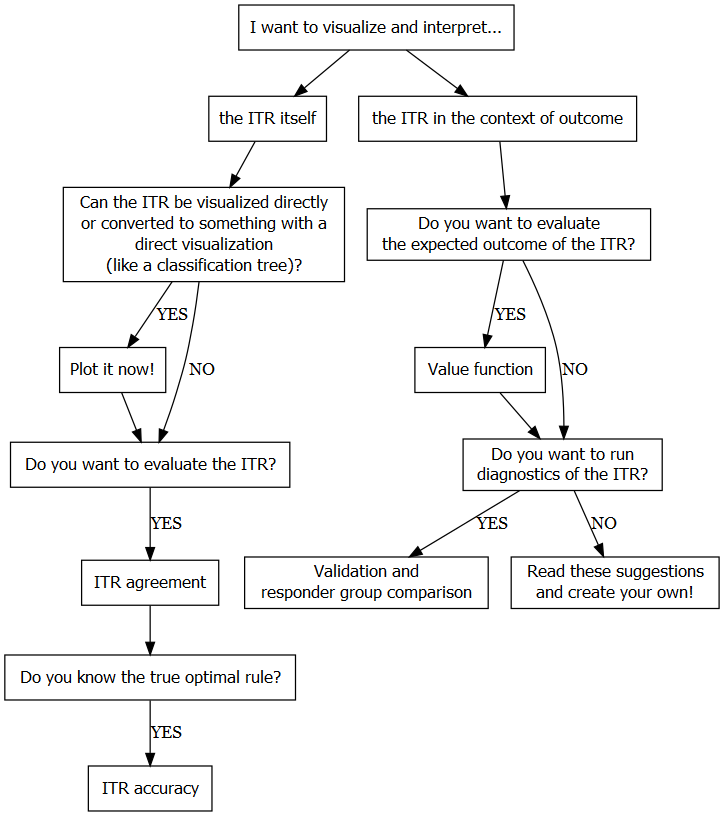

# Go through each sample size, batch, and method
for(n in ns){
for(ind in 1:n.batch){
for (method in methods){
cat("##############################")
cat("####n", n, ", method", method, "##########")
cat("##############################")
simmain(main_path = main_path, method = method, n = n,
magnitude = magnitude, distribution = distribution,
batch_ind = ind, n.cv = n.cv, batch_size = batch_size)
}
}
simsummarize(main_path, n, magnitude, distribution, n.cv = n.cv, batch_size = batch_size)
}
simsummarize_alln(main_path, ns, magnitude, distribution)Example code of the simulations conducted in Jiang et al. 2024
Manuscript
Impact of treatment effect heterogeneity on the estimation of individualized treatment rules (Authors: Xiaotong Jiang, Gabrielle Simoneau, Bora Youn, Fabio Pellegrini, Carl de Moor, Thomas Debray, Changyu Shen)
Background: There’s growing interest in tailoring treatment decisions to individual patient characteristics, but few studies have examined the implementation and performance of individualized treatment rules (ITRs) for count data.
Objective: To compare ITR methods in randomized trials with count outcomes and explore the impact of sample size, magnitude, and distribution of heterogeneity of treatment effect (HTE) on the validity of treatment recommendations.
Methods: We conducted a simulation study where patients with five covariates were randomized to receive one of two treatments. Four ITR methods were evaluated in terms of value function and accuracy. We also conducted a case study involving patients with multiple sclerosis.
Results: All ITR methods performed better with larger sample size, substantial HTE, or fewer patients with equivalent treatments. Conversely, ITRs was inferior to fixed treatment strategies with small sample sizes or limited HTE. However, larger sample sizes can compensate for smaller HTEs and high HTEs can compensate for limited data. In the case study, we identified HTE and developed a tree-based ITR that outperformed fixed treatment recommendations.
Conclusion: The performance of a precision medicine approach can be influenced by sample size and the magnitude and distribution of HTE, as well as the interactions between them.
How to run the simulations described in the paper yourself?
Below are the options that you can select and try:
Methods:
Sample size:
n\(\in\) \(\{\)500,1000,2500,5000,10000\(\}\) (can select multiple)
Magnitude of HTE:
magnitude\(\in\) \(\{\)no,low,medium,high\(\}\)
Distribution of HTE:
distribution\(\in\) \(\{\)symm 20x5,symm 10-15-50-15-10,symm 10-30-20-30-10,asymm 55-30-15,asymm 55-15-15-15\(\}\)
There are other constants that you can change as well but not necessary:
n.cv- number of CV iterationsbatch_size- number of CV iterations in each batch (number of batches =n.cv/batch_size)n.fold- number of CV folds
Note that it is recommended to use parallel programming or high performance clusters to run sample sizes higher than 2500 and/or more complex methods such as boosting, listDTR2, twoReg, and contrastReg due to long running time. The purpose of running CV iterations in batches is to allow parallelization.
An Example
Through a simplified example, we demonstrate
how to conduct the simulations with three sample sizes in batches (function
simmain()), andsummarize the results to a dataset (function
simsummarize()), which will then be visualized.
This example is based on 10 CV iterations of the magnitude no HTE with subgroup distribution symm 20x5, split in 2 batches of size batch_size if parallelization can be used. The chosen sample sizes are 500, 1000, 2500 and the methods used here are allA1, allA0, linear, poisson.
Result visualization
We follow the visualization strategies in this decision flowchart (Debray et al. 2025). First, we evaluate the accuracy and agreement of the ITR itself, following the left branch. Next, we follow the right branch and look at how the ITR performs in terms of patient well-being by taking into account the expected patient outcome under the ITRs estimated by selected PM methods.

The estimated ITR
Accuracy is a metric that quantifies how many estimated ITRs are the same as the true optimal ITRs. We only know the true optimal ITRs in simulated data where the true decision boundary is known. In this situation of no HTE, every patient’s optimal treatment is A1 so All A1 method is 100% accurate by definition. For the two PM methods, larger sample size increases the accuracy from 65% to 80% as sample size goes from 500 to 2500.

Agreement is a metric that quantifies how two estimated ITRs agree with each other. This plot is useful if we don’t know the true optimal ITR. It looks like Poisson and linear methods have 85% agreement, where Poisson recommended A1 to 82% of the patients and linear recommended A1 to 78% of the patients. By definition, All A0 and All A1 should have 0 agreement.

The ITR in the context of outcome
To evaluate the ITR in the context of outcome, the value functions (function plotV()) of the estimated ITRs are calculated and summarized separately in line plots. Four methods are used here for the scenario where no HTE exists. Recall that value function is a metric to quantify how “good” the ITRs are. Lower value functions are more desirable because our outcome of interest is number of relapses (a negative event). Here are some main takeaways:
- All A0 and All A1 are fixed rules so the value functions do not change as sample size increases.
- Poisson and linear regression methods have similar performance in terms of value function.
- The PM methods can learn better and recommend better treatment rules as sample size increases.

The value function results shown above are true value functions due to the benefit of simulated data. In real practice, we also need to estimate the value function when the true decision boundary is unknown. The visualization below shows the difference between \(V(\hat{d})\) and \(\hat{V}(\hat{d})\). It is expected that two layers of estimation creates a bigger uncertainty as the lengths of the error bars indicate. Larger sample size helps reduce the variance.

How to apply the PM methods to your own data?
This section is for those who are interested in giving it a try to your dataset. We will demonstrate with a simple example how to fit the model, calculate the estimates, and validate via a separate dataset.
Let us try a small example of 500 samples with medium-level HTE and asymmetric responder group profile (i.e., 55% high responders to A1, 30% moderatre responders to A1, 15% neutral). Here, we are using the doubly robust Contrast Regression method ((Yadlowsky et al. 2021), (Tian, Jiang, and Simoneau 2023)).
# Specify sample size, magnitude and distribution of HTE
n <- 500
params <- convertParameters("medium", "asymm 55-30-15", verbose = T)
# Specify X and Y variables to be included in the model
categoricalvars <- c("female", "prevDMTefficacy")
formatted_categoricalvars <- c("female", "prevDMTefficacy_Medium.and.high.efficacy", "prevDMTefficacy_None")
continuousvars <- c("ageatindex_centered", "prerelapse_num", "premedicalcost")
yvar <- "postrelapse_num"
# Simulate random datasets
traindata <- simdata(n = n, RCT = RCT, beta = params$beta,
percentiles = params$percentiles, seed = 2023)$data
testdata <- simdata(n = n, RCT = RCT, beta = params$beta,
percentiles = params$percentiles, seed = 2024)$data
# bigdata <- simdata(n = 10000, RCT = RCT, beta = params$beta, percentiles = params$percentiles, seed = 999)$data
# Format the training and testing data
temp <- format.countdata(data = traindata,
yvar = yvar,
timevar = "finalpostdayscount",
trtvar = "trt",
xcontinuousvars = c(continuousvars, "FUweight"),
xcategoricalvars = categoricalvars,
RCT = T, imputation.method = NULL)
traindata <- data.frame(y = temp$y, trt = factor(temp$trt), time = log(temp$time), temp$x)
traindata$trt <- as.numeric(traindata$trt == 1)
temp <- format.countdata(data = testdata,
yvar = yvar,
timevar = "finalpostdayscount",
trtvar = "trt",
xcontinuousvars = c(continuousvars, "FUweight"),
xcategoricalvars = categoricalvars,
RCT = T, imputation.method = NULL)
testdata <- data.frame(y = temp$y, trt = factor(temp$trt), time = log(temp$time), temp$x)
testdata$trt <- as.numeric(testdata$trt == 1)
# Calculate PS/IPTW (assuming randomized trials)
trainps <- mean(traindata$trt)
traindata <- traindata %>% mutate(ps = trainps, iptw = ifelse(trt == 1, 1/ps, 1/(1 - ps)))
testdata <- testdata %>% mutate(ps = trainps, iptw = ifelse(trt == 1, 1/ps, 1/(1 - ps)))
# Implement the contrast Regression method
results <- itrLuDR(traindata = traindata,
testdata = testdata,
categoricalvars = formatted_categoricalvars,
continuousvars = continuousvars,
RCT = T,
tree.depth = 2,
n.trees = 100,
Kfold = 5,
B = 3,
seed.cf = 3,
plot.gbmperf = F,
sim.big = NULL)The results of each PM method are saved as a list with name results and it contains two kinds of outputs:
dhat: the estimated ITR (where 0 means recommending A0 and 1 means recommending A1) for each subject; a vector of 0/1 values with size \(n\)vhat.dhat: numerator (U) and denominator (W) component of the value function estimate as well as intermediate components of the variance estimator (sumRj2 andsumRj2.mean); a list of 4 elements
Below are the results from the contrast regression method:
table(results$valueContrastReg$dhat)
0 1
204 296 results$valueContrastReg$vhat.dhat$U
[1] 128.4225
$W
[1] 627.3908
$sumRj2
[1] 0.03584947
$sumRj2.mean
[1] 8962.368The estimated value function is results$valueContrastReg$vhat.dhat$U / results$valueContrastReg$vhat.dhat$W = 0.2.
For demonstration purpose, the model was not trained for very long. More optimal results might be generated with a longer training period, which has a trade-off between computation burden and model performance.
References
Debray, Thomas et al. 2025. Comparative Effectiveness and Personalized Medicine Using Real-World Data. https://smartdata-analysis-and-statistics.github.io/time4stats/.
Tian, Lu, Xiaotong Jiang, and Gabrielle Simoneau. 2023. Precmed: Precision Medicine. https://smartdata-analysis-and-statistics.github.io/precmed/.
Yadlowsky, Steve, Fabio Pellegrini, Federica Lionetto, Stefan Braune, and Lu Tian. 2021. “Estimation and Validation of Ratio-Based Conditional Average Treatment Effects Using Observational Data.” Journal of the American Statistical Association 116 (533): 335–52.